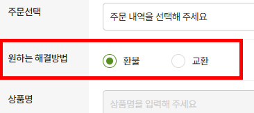

3단계의 개선 과정
1. 기존 입력 구조 — 문제 현황

기존 CRM의 환불·교환 입력 화면 — 자유 텍스트 의존 구조와 중복 필드(확인일시)가 있던 상태입니다. 고객 의도를 파악하기 위해 매건 재확인이 필요했습니다.
2. 입력 구조 재설계

답변 작성일과 중복되던 확인일시 필드를 제거하고, 해당 위치에 고객 의도 데이터를 매핑했습니다. 개발 범위를 최소화하는 스펙을 직접 설계해 빠르게 반영했습니다.
3. 요청 유형 선택값 반영

고객이 문의 등록 단계에서 환불·교환 의도를 직접 선택하도록 바꾸고, 선택된 값이 후속 처리 기준으로 바로 활용되도록 설계했습니다.